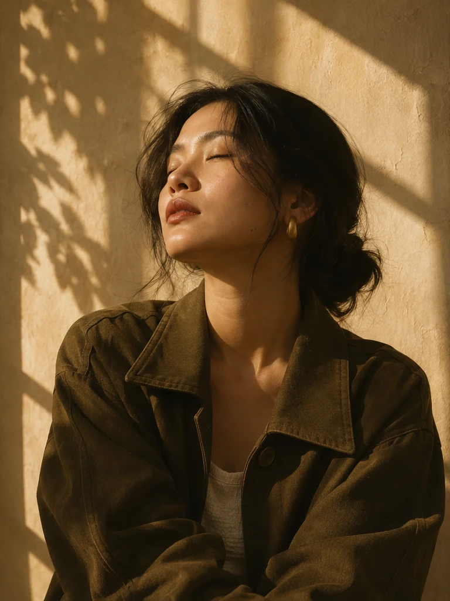

Chân dung cá nhân
Ảnh hồ sơ, ảnh cho trang giới thiệu hoặc một bộ ảnh lưu dấu một giai đoạn. Cùng chọn trang phục, ánh sáng và nhịp chụp phù hợp với bạn.
STUDIO CHÂN DUNG & SẢN PHẨM
Một buổi chụp thong thả. Một bộ ảnh giữ lại nét riêng của bạn, hoặc kể câu chuyện của món đồ bạn làm ra.
Trao đổi về buổi chụp
01 / BỘ ẢNH MINH HỌA
Ánh sáng cửa sổ làm nổi đường nét trên gương mặt. Với đồ vật, bóng đổ và chất liệu kể tiếp phần còn lại.
02 / DỊCH VỤ
Ảnh hồ sơ, ảnh cho trang giới thiệu hoặc một bộ ảnh lưu dấu một giai đoạn. Cùng chọn trang phục, ánh sáng và nhịp chụp phù hợp với bạn.
Ảnh cho bộ sưu tập nhỏ, website hoặc mạng xã hội. Chuẩn bị bối cảnh và góc máy để người xem thấy rõ chất liệu, hình dáng và chi tiết.
03 / QUY TRÌNH
Chia sẻ mục đích dùng ảnh, thời gian và vài hình tham khảo bạn thích.
Thống nhất danh sách ảnh, cách phối đồ hoặc đạo cụ và lịch buổi chụp.
Chọn ảnh theo mục đích sử dụng và nhận bộ đã chỉnh theo định dạng thống nhất.
04 / LIÊN HỆ
Khi hỏi lịch, hãy chuẩn bị loại ảnh bạn cần, ngày dự kiến và nơi bạn định dùng ảnh. Một vài hình tham khảo sẽ giúp buổi trao đổi cụ thể hơn.
Nếp là studio giả định. Trang mẫu dùng để xem luồng liên hệ.